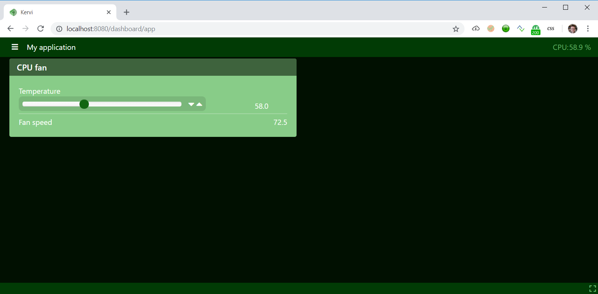
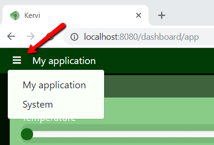
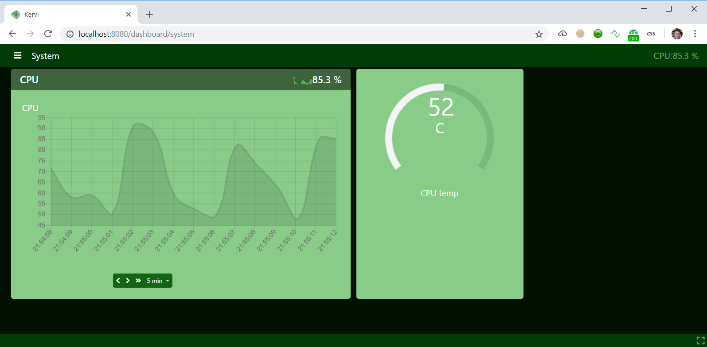

Dashboards¶
An application may define one or more dashboards. If it is a home automation application A dashboard could be a room or a floor. Each dashboard contains one or more panels where it is possible to link sensors, controllers, camera and other components. The dashboards are responsive and adjust to the width of the browser. Below is the same dashboard in mobile and browser view.
The kervi framework creates a default dashboard if no dashboards has been defined in your app. In the same way panels are created on the fly if the call to link_to_dashboard doesn’t include panel name. In this case here the name and id of the sensor or other value is used to name the panel.
All examples in this section have so far utilised that feature. In the code snippet below the cpu_load_sensor is linked twice to the ui. The ui creates a panel on the first link and reuses this panel on the next link.
#create a senors that uses CPU load device driver
cpu_load_sensor = Sensor("CPULoadSensor","CPU", CPULoadSensorDeviceDriver())
#link to dashboard
#This link goes into the panel header
cpu_load_sensor.link_to_dashboard(type = "value", show_sparkline=True, link_to_header=True)
#this link goes into the panel body
cpu_load_sensor.link_to_dashboard(type="chart")
You use the Dashboard class if you want to define your own dashboards. A dashboard has an id and name. The id is used in the link_to_dashboard function to specify the dashboard that should be linked to.
A dashboard has one or more panels with name and id. Again the panel id is user when linking. You can use a lot of parameters for each panel that specify how the panel should be rendered.
Below is the controller script again but now with defined dashboards and panels.
if __name__ == '__main__': # this line is important in windows
from kervi.application import Application
app = Application()
from kervi.dashboards import Dashboard, DashboardPanel
#Define dashboards and panels
Dashboard(
"app",
"My application",
[
DashboardPanel("fan", title="CPU fan", width=50)
],
is_default=True #This is the default dashboard that is shown when the ui loads.
)
Dashboard(
"system",
"System",
[
#create a panel that takes 50% of the browser width
DashboardPanel("cpu-load", width=50),
#create a panel that takes 25% of the browser width
DashboardPanel("cpu-temp", width=25)
]
)
#create sensor
from kervi.sensors.sensor import Sensor
from kervi.devices.platforms.common.sensors.cpu_use import CPULoadSensorDeviceDriver
from kervi.devices.platforms.common.sensors.cpu_temp import CPUTempSensorDeviceDriver
#create a senors that uses CPU load device driver
cpu_load_sensor = Sensor("CPULoadSensor","CPU", CPULoadSensorDeviceDriver())
#link to dashboard
cpu_load_sensor.link_to_dashboard("*", "header_right")
cpu_load_sensor.link_to_dashboard("system", "cpu-load", type = "value", show_sparkline=True, link_to_header=True)
cpu_load_sensor.link_to_dashboard("system", "cpu-load", type="chart")
#create a senors that uses CPU temp device driver
cpu_temp_sensor = Sensor("CPUTempSensor","CPU temp", CPUTempSensorDeviceDriver())
#link to dashboard
cpu_temp_sensor.link_to_dashboard("System", "cpu-temp", type="radial_gauge")
#define a controller
from kervi.controllers.controller import Controller
from kervi.values import NumberValue
class FanController(Controller):
def __init__(self):
Controller.__init__(self, "fan_controller", "Fan")
#define an input that is a number
self.temp = self.inputs.add("temp", "Temperature", NumberValue)
self.temp.min = 0
self.temp.max = 150
#define an output that is a number
self.fan_speed = self.outputs.add("fan_speed", "Fan speed", NumberValue)
#input_changed is called by the framework when any of the controller inputs changes its value.
def input_changed(self, changed_input):
temp = self.temp.value
if temp <= 20:
self.fan_speed.value = 0
else:
speed = (temp / 80) * 100
if speed > 100:
speed = 100
self.fan_speed.value = speed
#Instantiate the controller
fan_controller = FanController()
#show the controller input and output in the ui.
fan_controller.temp.link_to_dashboard("app", "fan")
fan_controller.fan_speed.link_to_dashboard("app", "fan")
#link the fan controllers temp input to cpu temperature sensor
fan_controller.temp.link_to(cpu_temp_sensor)
#link to the motor controller device
from kervi.devices.motors.adafruit_i2c_motor_hat import AdafruitMotorHAT
motor_driver = AdafruitMotorHAT()
motor_driver.dc_motors[0].speed.link_to(fan_controller.fan_speed)
When you run the script above you should see this:
If you click on the dashboard menu top left you are able to select the System dashboard.
 {kind=link}
Read more about dashboards here